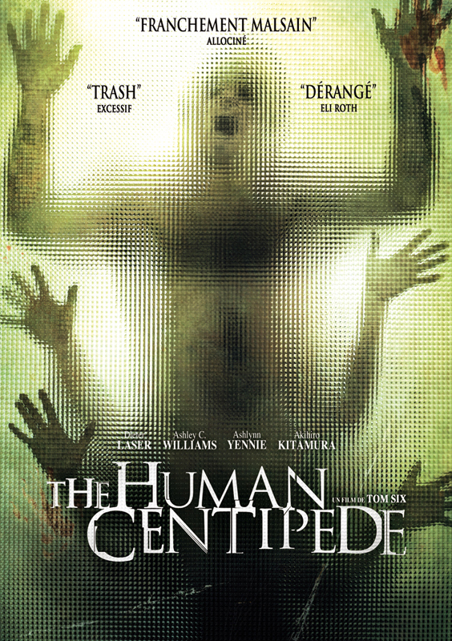

Un savant fou a dans l'idée de créer un mille-pattes humain. Pour ce faire, il doit trouver des cobayes. Par chance, deux jeunes américaines en voyage à travers l'Europe tombent en panne en plein milieu d'une forêt. Elles sont ravies de trouver refuge chez le Dr Heiter.
Dieter Laser
Ashley C. Williams
Ashlynn Yennie
Akihiro Kitamura
22H